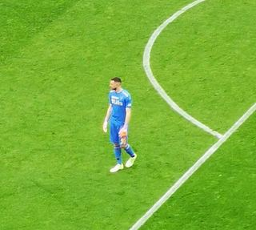

Ezzcoins › Player pages › Wladimiro Falcone
84
GK

Falcone
DIV80
HAN79
KIC78
REF85
SPD80
POS84
Photo (cropped): Saggittarius A · CC BY-SA 4.0 · Wikimedia Commons
Photo source
https://commons.wikimedia.org/wiki/File:Milan_Lecce_2023_Falcone.jpg
Licence: https://creativecommons.org/licenses/by-sa/4.0
Wladimiro Falcone
84 GK · Lecce · Serie A Enilive ·  Italy
Italy
No console price yet. Cards rated 84 or higher are priced in turns through the day.
84Meta rating · GK same as overall
DIV80
HAN79
KIC78
REF85
SPD80
POS84
Chemistry style
Turn on JavaScript to see this card with each chemistry style.
- Position
- GK
- Club
- Lecce
- League
- Serie A Enilive
- Nation
- Italy
- Skill moves
- 1★
- Weak foot
- 2★
- Preferred foot
- Right
- PlayStyles+
- Footwork+
Meta rating: Ezzcoins' own estimate of how well this card plays in game, worked out from its stats for each position it can play, its skill moves, weak foot and PlayStyle+. An average card scores about its overall rating; higher means it plays above its rating.
Watch on Ezzcoins